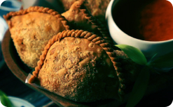

Mengenal Budaya
Jati Diri Bangsa
Yuk melestarikan budaya bangsa
karena budaya adalah cerminan bangsa
Acara
Jaipongan
Jadwal
1 Juni 2022

Jalangkote
Jajanan mirip kue pastel khas Sulawesi Selatan.
Tari Bedhaya
Tarian kebesaran di keraton dan kasunanan.
Apa itu Cultured?
Cultured adalah website yang menyajikan informasi
untuk mengenal suku di Indonesia dalam satu situs.
1000+
Suku Bangsa
300+
Etnik
700+
Makanan Khas